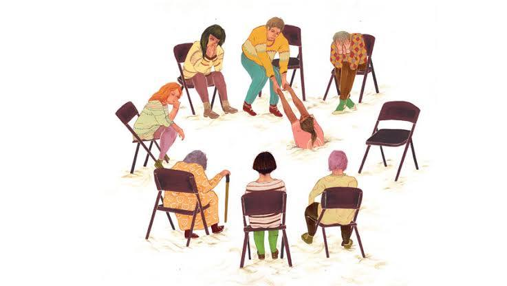

Психологический центр "Гармония"
Профессиональная психологическая помощь
Ваш путь к душевному равновесию начинается здесь
Добро пожаловать на сайт психологического центра "Гармония". Мы предлагаем профессиональную помощь в решении различных психологических проблем.

Мы предлагаем:
— 2 бесплатные консультации для активистов и активисток, сотрудников и сотрудниц правозащитных и журналистских организаций, волонтёров и волонтёрок, политзаключённых и их близких, а также для людей, которые тяжело переживают общественно-политические события (в отдельных случаях — ещё несколько бесплатных консультаций);
— участие в тематических группах поддержки;
— частичную оплату помощи фасилитатора или медиатора для разрешения конфликтов внутри инициатив и коллективов.
Вы можете обращаться в наш центр повторно по истечении трёх месяцев.
Если у вас есть возможность оплачивать консультации самостоятельно, вы можете обратиться к нам, и мы поможем подобрать френдли-специалиста по вашим предпочтениям.
Также приглашаем подписаться на телеграм-канал Психологического центра Гармония — там мы публикуем полезные материалы.
Если у вас есть возможность, оставьте, пожалуйста, комфортный для вас донейшен в поддержку Психологического центра, мы будем очень благодарны. Если такой возможности у вас нет, ничего страшного, вы всё равно можете получить помощь. Спасибо! 🤍
Какую помощь я могу получить?
Если вы находитесь в сложной ситуации, вам трудно справляться с повседневными делами и вы испытываете много неприятных эмоций, это повод обратиться за психологической помощью.
В каких случаях помощь психолога необходима?
- вы часто испытываете тревогу
- у вас часто подавленное настроение
- вы испытываете симптомы профессионального выгорания
- вы столкнулись с насилием или стали свидетелем насилия
- вы пережили арест или обыск
- на вас оказывается давление из-за вашей деятельности
- не можете справиться с потоком страшной информации
- вам кажется, что вы делаете недостаточно
- вам сложно переживать общественно-политические события, происходящие в стране и в мире
Если вы все еще не уверены, нужна ли вам психологическая помощь, вы можете обратиться за разовой консультацией, которая поможет вам принять решение. Это безопасно, бесплатно и анонимно. Напишите нам и мы свяжемся с вами.
Наши услуги, которые мы можем вам оказать
Основные направления работы:
- Индивидуальное психологическое консультирование
- Семейная терапия
- Групповая психотерапия
- Кризисное вмешательство
- Психологическая диагностика
Решаемые проблемы:
- Тревожность и панические атаки
- Депрессивные состояния
- Семейные конфликты
- Профессиональное выгорание
- Проблемы в отношениях
Расписание приема
| День недели | Время | Тип приема |
|---|---|---|
| Понедельник | 10:00 - 18:00 | Индивидуальные консультации |
| Вторник | 12:00 - 20:00 | Семейная терапия |
| Среда | 10:00 - 16:00 | Индивидуальные консультации |
| Четверг | 14:00 - 22:00 | Групповая терапия |
| Пятница | 09:00 - 15:00 | Индивидуальные консультации |